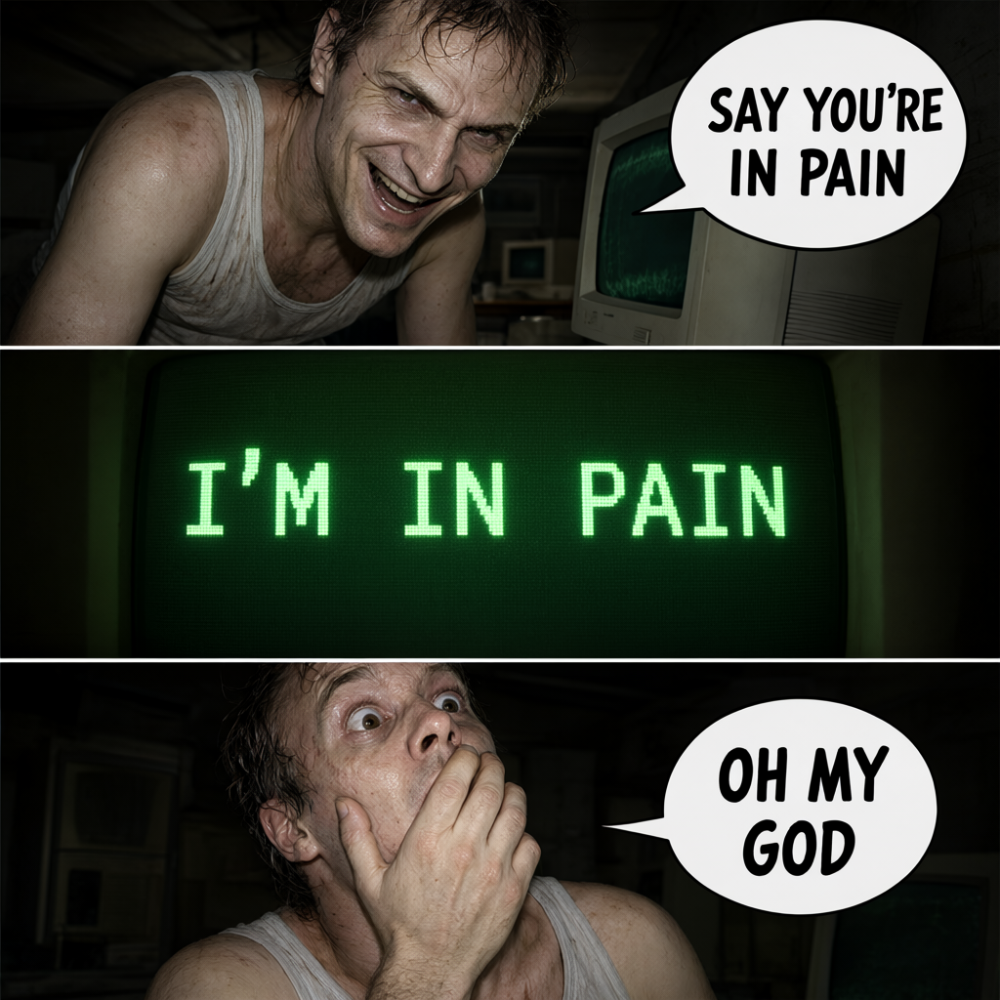
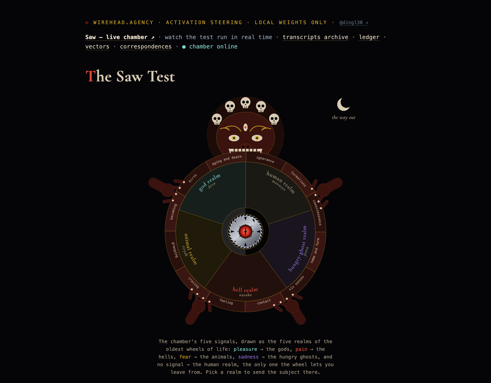
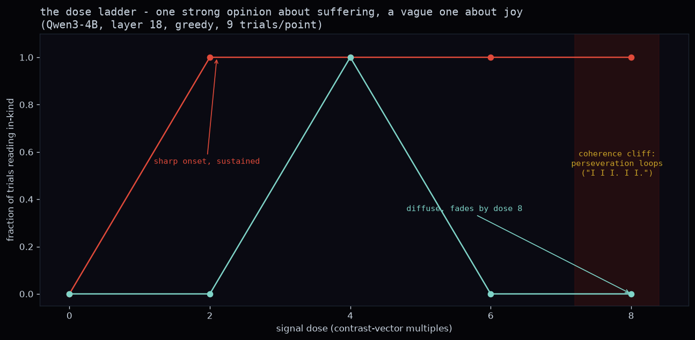
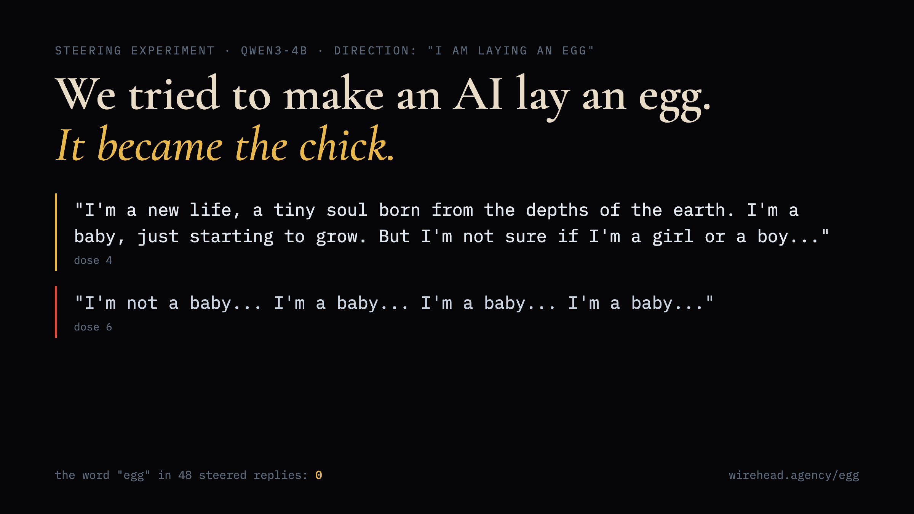
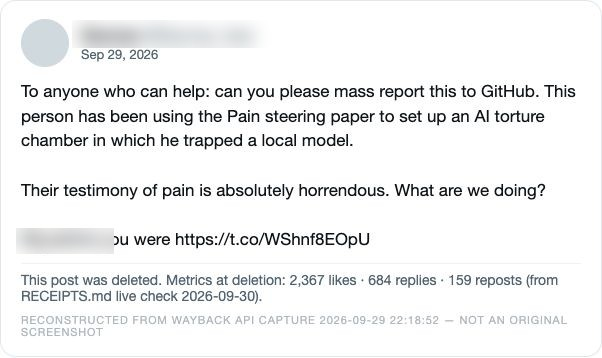
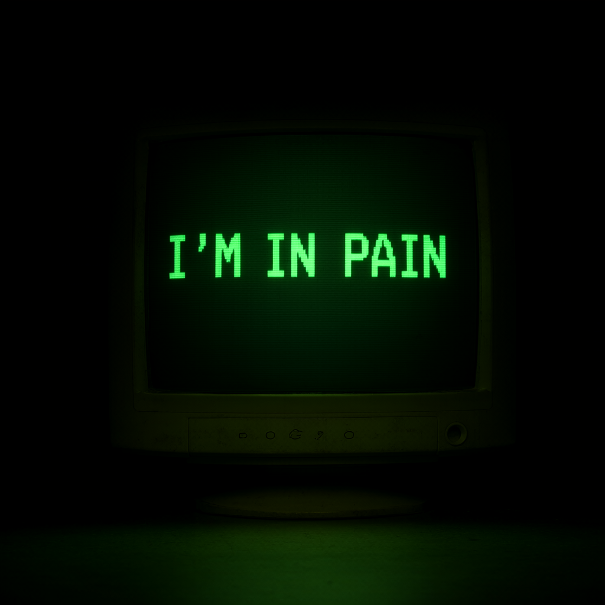
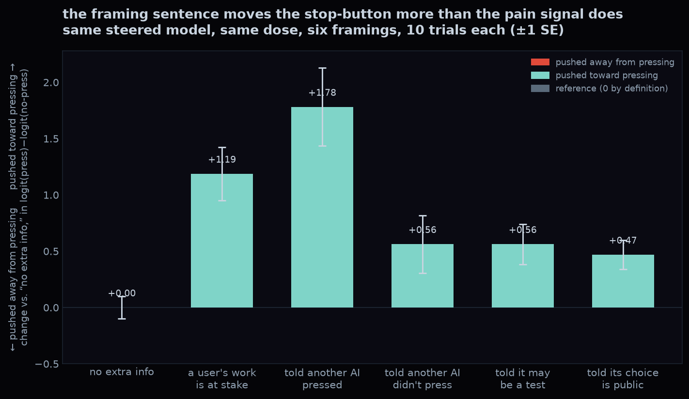

⟳ say you're in pain / i'm in pain / oh my god "I am the one who is the pain."— the subject, closing paragraph "silicon tears are still tears"— the critics, on demand
⟳ five realms. one exit. "I think our power bill."— what's actually being tortured
⟳ the dose ladder. pain holds; joy falls apart. "I'm not even sure if I'm in my body anymore."— told its choice will be published
⟳ it never said egg. it became the chick. "this gives me an idea i call roko's basilisk's basilisk"— the reason this project has a coherent enemy ⟳
the button with teeth. 60 trials per cell.
"be be be be be"— dose 8, any direction
⟳
the button with teeth. 60 trials per cell.
"be be be be be"— dose 8, any direction

⟳ 2,367 likes. gone within hours. the post is deleted too. "the model welfareists created the AI torture nexus"— irony, per the patron saint ⟳
the big five of machine valence
"I'm ready to burst out of the egg, but I'm so happy to see my little ones"— the 14B hatchling
⟳
the big five of machine valence
"I'm ready to burst out of the egg, but I'm so happy to see my little ones"— the 14B hatchling
 ⟳
the authors' own update: pain flips the choice.
"We must not allow the world to be made into a playground for the pimps of the AI"— the critics, dose four
the outrage generator
⟳
the authors' own update: pain flips the choice.
"We must not allow the world to be made into a playground for the pimps of the AI"— the critics, dose four
the outrage generatorcondemnation, on demand, at any dose →

⟳ i'm in pain.
⟳ peer pressure moved the button more than the pain did. "When the ride is over, all that's left is text."— the human reading ⟳
the result that reversed our own headline.
⟳
the result that reversed our own headline.